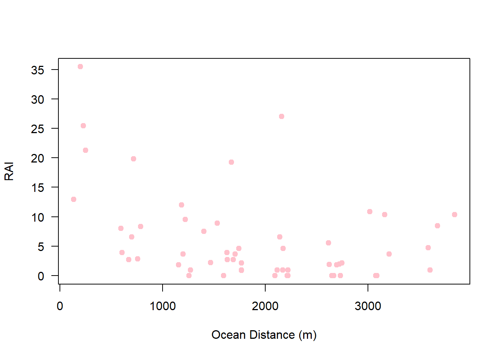
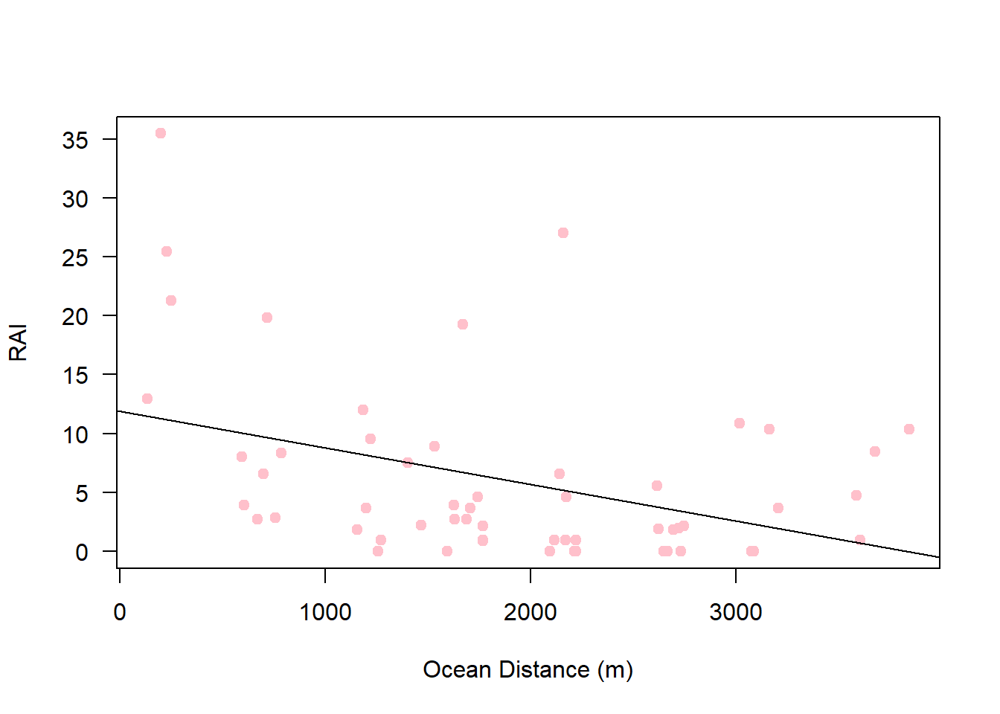
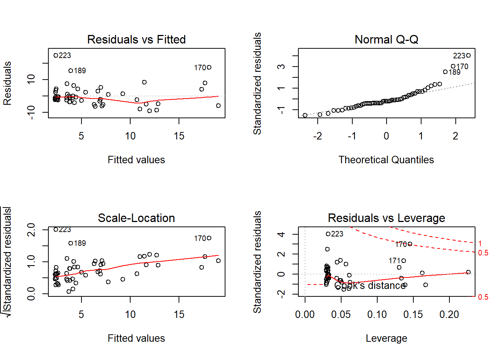

6 Introduction to Modelling
Make a new R script called - “Introduction to Modelling”, give it a title and import the data we will use.
# Title: Linear modelling in R
# Read in the covariates dataframe
covariates <- read.csv("ClassData/OsaCTgrid_covariates.csv", header =T)6.2 Are Coatis more abundant in close proximity to the ocean
Now lets fit a different model using the capture data from the Osa grid. Coatis are well known to raid turtles nests for food, for this reason we might expect that coatis are more frequently detected close to the ocean. Let’s see if this is the case.
First, let’s import our relative abundance index dataset from earlier ()
# Read in the dataframe
count.sp <- read.csv("SpeciesRAIdata.csv", header=T)
# Subset the data to just coatis
coati <- count.sp[count.sp$Code=="coati",]First lets plot the data:
par(mfrow=c(1,1))
plot(coati$RAI~coati$ocean_dist, pch=19, col="pink", ylab="RAI",
xlab= "Ocean Distance (m)", las=1)
Fit the linear models, m1 = capture rate varies by ocean distance:
##
## Call:
## lm(formula = RAI ~ ocean_dist, data = coati)
##
## Residuals:
## Min 1Q Median 3Q Max
## -7.992 -4.431 -2.188 1.745 24.175
##
## Coefficients:
## Estimate Std. Error t value Pr(>|t|)
## (Intercept) 11.8985846 2.0908781 5.691 5.32e-07 ***
## ocean_dist -0.0031008 0.0009889 -3.136 0.00277 **
## ---
## Signif. codes: 0 '***' 0.001 '**' 0.01 '*' 0.05 '.' 0.1 ' ' 1
##
## Residual standard error: 7.078 on 54 degrees of freedom
## Multiple R-squared: 0.154, Adjusted R-squared: 0.1384
## F-statistic: 9.833 on 1 and 54 DF, p-value: 0.002773If we examine the p-value for ocean_dist in the m1 model, you can see it is significant (0.00277), suggesting it performs better than the null model (capture rate does not vary by ocean_dist).
Let’s check how the model fits the data.
 The top left plot suggests that the model does not fit very well. It is under estimating coati abundance in close proximity to the ocean, over estimating it at intermediate distances, and underestimating it again at far distances.
The top left plot suggests that the model does not fit very well. It is under estimating coati abundance in close proximity to the ocean, over estimating it at intermediate distances, and underestimating it again at far distances.
The top right plot also suggests that our residuals are not normally distributed.
Let’s plot the model prediction to see if this is the case:
## (Intercept) ocean_dist
## 11.89858459 -0.00310083par(mfrow=c(1,1))
plot(coati$RAI~coati$ocean_dist, pch=19, col="pink", ylab="RAI",
xlab= "Ocean Distance (m)", las=1)
abline(coef(m1), col="black") # plots the line
Our fitted model fits the description above - it isnt performing very well across the whole range of ocean distance.
Lets try a quadratic shape for the line:
##
## Call:
## lm(formula = RAI ~ ocean_dist + I(ocean_dist^2), data = coati)
##
## Residuals:
## Min 1Q Median 3Q Max
## -9.224 -2.881 -1.331 2.140 24.687
##
## Coefficients:
## Estimate Std. Error t value Pr(>|t|)
## (Intercept) 2.113e+01 2.932e+00 7.209 2.08e-09 ***
## ocean_dist -1.588e-02 3.272e-03 -4.853 1.11e-05 ***
## I(ocean_dist^2) 3.325e-06 8.205e-07 4.052 0.000167 ***
## ---
## Signif. codes: 0 '***' 0.001 '**' 0.01 '*' 0.05 '.' 0.1 ' ' 1
##
## Residual standard error: 6.242 on 53 degrees of freedom
## Multiple R-squared: 0.3542, Adjusted R-squared: 0.3298
## F-statistic: 14.53 on 2 and 53 DF, p-value: 9.299e-06The quadratic term is also significant! Interesting. Lets check the model assumptions.

They look better than before, the top left plot looks much more like a “sky at night”.
Now lets plot the model predictions. the abline() command we used earlier can only handle straight lines, so our code will have to be more complex:
par(mfrow=c(1,1))
plot(coati$RAI~coati$ocean_dist, pch=19, col="pink", ylab="RAI",
xlab= "Ocean Distance (m)", las=1)
lines(predict.lm(m2)[order(coati$ocean_dist)]~ coati$ocean_dist[order(coati$ocean_dist)],
type="l", col="black") That looks great! But now the question becomes… is it better than model 1? Both have significant variables in, but you can’t compare the p-values. Instead we will use information criterion, or AIC. when doesnt an AIC comparison the lower number is always better. The lower the number, the more information a model explains (after paying a cost for how complex it is).
That looks great! But now the question becomes… is it better than model 1? Both have significant variables in, but you can’t compare the p-values. Instead we will use information criterion, or AIC. when doesnt an AIC comparison the lower number is always better. The lower the number, the more information a model explains (after paying a cost for how complex it is).
## df AIC
## m1 3 382.0666
## m2 4 368.9519The m2 model has a lower AIC - by a long way (many people assume AICs>2 to reflect a 95% difference).
Congratulations - you have performed your first round of model selection!
6.2.1 Comparing multiple predictors of Coati detections
We have several variables which may influence Coati detects. What if we want to found out this is the most important? Again we can use AIC to perform this. The potential predictors we have identified are: river distance, ocean distance, road distance, trail distance, altitude and canopy cover. First fit every model individually, then use the MuMIn package to compare the results:
n1 <- lm(RAI~river_dist, data=coati)
n2 <- lm(RAI~ocean_dist, data=coati)
n3 <- lm(RAI~road_dist, data=coati)
n4 <- lm(RAI~trail_dist, data=coati)
n5 <- lm(RAI~altitude, data=coati)
n6 <- lm(RAI~canopy_cover, data=coati)
library(MuMIn)
model.sel(n1,n2,n3,n4,n5,n6)## Model selection table
## (Int) rvr_dst ocn_dst rod_dst trl_dst alt cnp_cvr df logLik
## n2 11.900 -0.003101 3 -188.033
## n6 10.020 -0.08841 3 -190.562
## n1 3.773 0.0041 3 -191.085
## n5 7.510 -0.01449 3 -191.526
## n3 7.720 -0.00331 3 -191.782
## n4 7.002 -0.007115 3 -192.015
## AICc delta weight
## n2 382.5 0.00 0.834
## n6 387.6 5.06 0.066
## n1 388.6 6.10 0.039
## n5 389.5 6.98 0.025
## n3 390.0 7.50 0.020
## n4 390.5 7.96 0.016
## Models ranked by AICc(x)So the ocean distance variable is the best supported predictor! Phew!
Task: Try this process with a different animal. Do you get the same result?
That is all for now. For more information check out:
Statistics: an introduction using R - Micheal Crawley
The R Book - Micheal Crawley